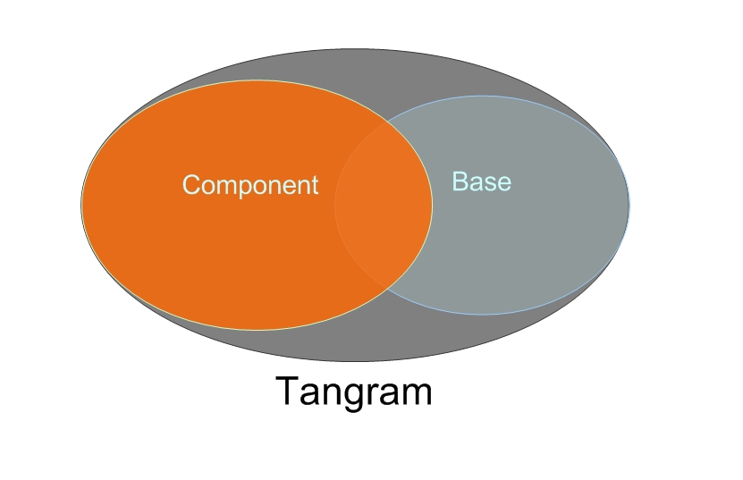
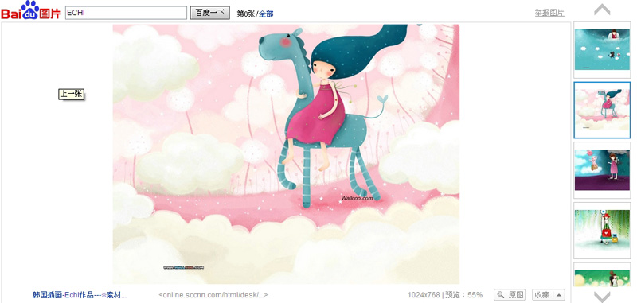
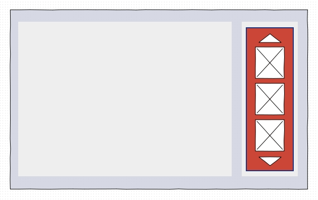
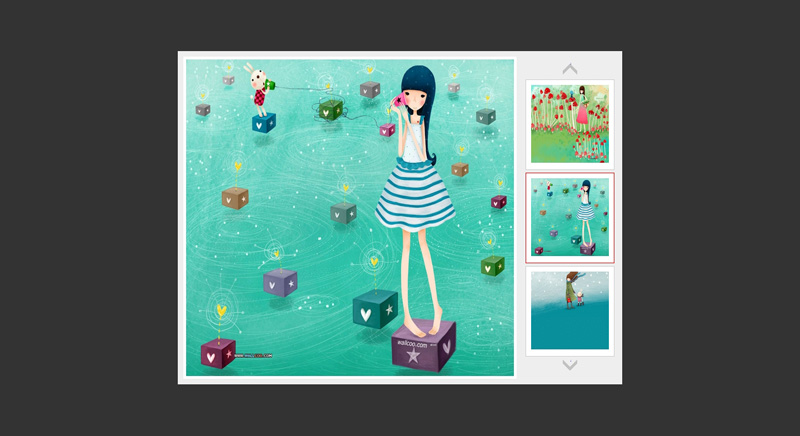
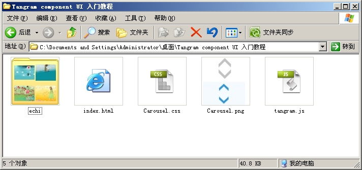

Tangram Component 入门指南教程
1 Tangram Component简介
Tangram是一个使用简单，功能丰富的Javascrip框架，她分为Component和Base两部分。Component主要包含了UI组件和FX动画特效，本教程的目标是使用Component中的组件快速构建一个应用，本文要求读者了解HTML(DOM)和CSS的一些常识。

2 设计一个案例需求
2.1 页面效果
我们从百度图片搜索中看到这样一个页面，然后尝试分析这个页面应用到效果的。页面效果如图：

忽略页面中的搜索、查看原图等无关信息，着重关注页面的特效，也就是将搜索结果以可滚动的缩略展现，并且单击缩略图的时候，左侧区域将显示对应的大图。
2.2 归纳需求点
简要需求点归纳如下：
- 定义一组数据，模拟搜索结果
- 展示搜索结果在右侧边成为一个可以滚动的缩略图列表
- 当单击某个缩略图的时候左侧的原有内容将替换成缩略图相对应的大图。
3 案例规划
3.1 布局设计
根据需求点中的需求，对页面的布局做出设计设计：

Tangram Component UI中的Carousel组件可以支持直接显示红色区域内的效果，所以，布局设计不需要考虑红色区域内的内容。
3.2 效果功能规划
红色区域内的效果Carousel组件，在进行实例化后（具体代码请参阅本文4.3节），传入的参数中可以加入名为“onitemclick”的参数，值类型为function；该参数定义当成员被单击后进行回调的函数。该回调函数传入参数evt 触发事件的对象。根据evt可以获得当前的Carousel组建的成员列表信息、当前点击的成员序号，据此我们可以修改左侧内容。
3.3 素材资源
归纳我们需要哪些素材资源，清单如下：
| 文件 | 说明 | |
|---|---|---|
| 1 | /index.html | 布局的HTML代码、CSS代码 |
| 2 | /tangram.js | 包含Carousel组件的Tangram框架脚本文件 |
| 3 | /Carousel.css | 包含Carousel组件需要用到的样式 |
| 4 | /Carousel.png | 包含Carousel组件需要用到的图片素材（sprit处理） |
| 5 | /echi/*.jpg | 展示图片的资源文件，[01~12]. jpg 12个图片资源 |
4 实施
4.1 Carousel组件资源
4.1.1 Carousel组件的脚本文件
方法一：
- 输入URL导出
- 然后单击导出，将文件下载到本地。
方法二：
- 打开CodeSearch页面
- 在左侧的代码树上勾选baidu.ui.Carousel；Carousel是一个包，实际勾选则会勾选内部所有的文件，文件中带有 ”$” 符号的是这个组件支持的插件，可选。同时一些其他组件被勾选为黄色的方块，通常这表明当前组件需要依赖这些代码。

4.1.2 Carousel组件样式
Carousel.css文件定义了tangram.ui.Carousel组件的公共样式，以及自定义的vertical皮肤内容，文件内容从此示例页面中修改而来，具体代码如下：
| Carousel.css |
|---|
| /*tangram.ui.Carousel*/ /*public*/ .tangram-carousel{ position : relative; overflow : hidden; } .tangram-carousel-scroll { position : absolute; } .tangram-carousel-item{ cursor : pointer; margin: 5px 0 5px 5px; _margin: 5px 10px 5px 10px; padding: 9px; border: 1px solid #CCCCCC; background-color: white; } .tangram-carousel-item-focus { border: red solid 1px; } .tangram-carousel-btn-base{ background: url(Carousel.png); width: 95px; height:26px; text-align: center; font-size: 0px; -webkit-text-size-adjust: none; font-size:1px; } /* vertical皮肤 */ .tangram-carousel-vertical-btn-prev{ display:block; margin:0px auto; background-position: 0 0; } .tangram-carousel-vertical-btn-next{ display:block; margin:0px auto; background-position: 0 -26px; } a.tangram-carousel-vertical-btn-prev:hover{ background-position: 0px -50px; } a.tangram-carousel-vertical-btn-next:hover{ background-position: 0px -76px; } |
4.1.3 Carousel组件图片素材
上文Carousel.css中btn-base的样式定义了一个Carousel.png图片文件为背景，即：上下滚动按钮的背景图片。图片素材经过Sprit处理后如下：
4.2 页面布局
根据案例规划中的布局设计图，我们编写出相应的HTML和CSS代码，同时引入Carouse资源文件。代码如下：
| index.html（不包括特效代码） |
|---|
| <!DOCTYPE html> <html> <head> <meta http-equiv="Content-Type" content="text/html; charset=utf-8" /> <title>用Tangram Component的Carousle组件编写一个幻灯片应用</title> <script type="text/javascript" src="tangram.js" charset="utf-8"></script> <link type='text/css' rel='stylesheet' href='Carousel.css'/> <style type="text/css"> body{ background:#333 } .container{ /* 中间内容盒子，浮动居中 */ width:620px;height:600px;background:#EEE; position:absolute; margin:-300px 0px 0px -400px; left:50%;top:50%; padding-right:180px; } .img-con{ /* 左侧展示大图容器 */ width:600px;height:580px;background:#FFF; text-align:center; position:relative; margin:10px 0 0 10px; } .img-con img{ /* 左侧展示图样左 */ width:590px;height:570px; border:5px solid #FFF } .carousel-con{ /* 右侧缩略图列表容器 */ width:174px; height:590px; position:absolute; top:20px;right:5px; } .carousel-con img{ /* 定义缩略图中图像的大小 */ width: 140px; height: 140px; padding:0px;margin:0px } </style> </html> |
4.3 嵌入特效代码
以下内容是本特效的关键，下面的代码描述了如何使用Carousel组件，请注意代码中的注释，另外，我们应把代码插入body标签结束之前。具体代码如下：
| index.html（body标签结束之前插入该段Script） |
|---|
<script type="text/javascript"> orientation: "vertical", // 排列方式 var s = this.focus; |
4.4 效果图截图
HTML布局设计效果预览：
实际效果图预览：

文件资源截图：

5 总结
首先我们通过设计一个页面特效应用的需求，然后对特效应用列出功能点、规划效果功能所需要的资源，然后进行实际的代码编写。完成了使用Tangran Component中UI中的Carousel组件，快速构建了一个“幻灯片”效果的应用。
操作页面元素我们使用了Base中的一些方法配合，比如T.g；在Component中除了UI组件外，还有FX动画效果，多方配合可以使得网站应用的功能更加易用用户体验更佳。